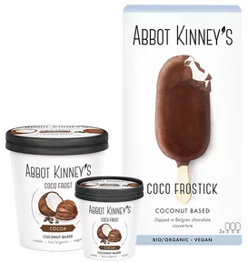
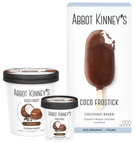

Plant-based is the way
forward. So, we made it
delicious.

Ontmoet onze 100% vegan en biologische Coco Daily Delight yog. Gemaakt met dezelfde kokosblend als het origineel, maar in een aangepast recept voor een lichtere start van je dag. Half the fat, twice the fun!
Ontdek meer
Een content label opgezet door Abbot Kinney's. Samen met een team van experts zullen we onderzoeken wat goed eten betekent. We zullen onze huidige relatie met goed eten onderzoeken en ons verdiepen in manieren waarop we dit kunnen verbeteren.
Je huis ruikt naar een overheerlijke verse bakkerij. Bedank ons later.
 Recepten
Recepten
Maak optimaal gebruik van de herfst met deze heerlijke pompoen-boerenkool salade afgewerkt met een heerlijke mosterd-yoghurt dressing.
Het kan niet pittig genoeg worden met deze Indiase gekruide pompoencurry.
We maken heerlijke en innovatieve vegan yoghurt en vegan ijs. We gebruiken uitsluitend natuurlijke ingrediënten die biologisch en 100% plantaardig zijn. Gemaakt van simpele plantaardige ingrediënten van hoge kwaliteit en vrij van onnatuurlijke geur-, kleur- en smaakstoffen. Van kokosyoghurt tot amandel yoghurt en lactosevrij ijs, al onze producten bevatten geen soja en zijn veganistisch.
 

Een heerlijk alternatief voor yoghurt
Ontdek al ons vegan ijs